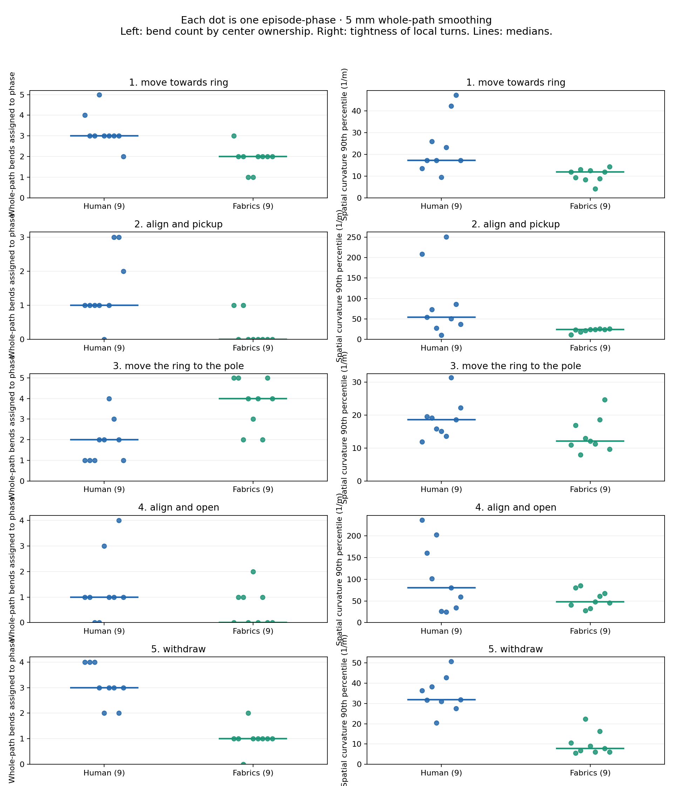
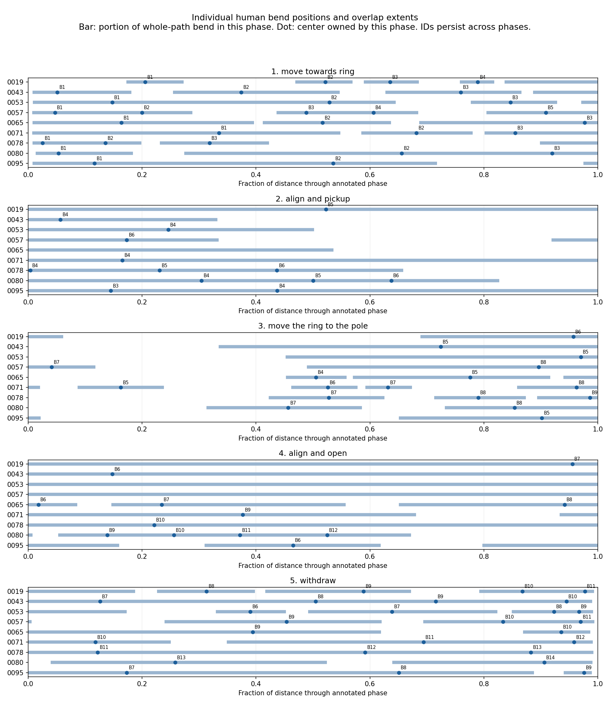

← All motion-comparison galleries
Individual 3D paths and phase overlaps · Your saved annotations
All seven new annotations are included, giving nine usable left-arm demonstrations. ep_0036 remains excluded. Each path is analyzed individually; there is no averaged trajectory.
The strongest repeatable result is phase-dependent sharpness. At both 5 and 10 mm smoothing, pickup alignment has a higher spatial 90th-percentile curvature than transport in 8 of 9 demonstrations. Release alignment is sharper in all 9. At 2 mm the pickup comparison is 9 of 9.
Human transport varies from 1 to 4 assigned bends at 5 mm, so the earlier two-example result of one bend each was not universal. Relative to these fabrics executions, human paths have more assigned bends during reaching and withdrawal and fewer during transport. Those counts also reflect different phase lengths and tasks; they do not alone establish a controller defect.
Counts assign each whole-path bend once, to the phase containing its turning-weighted center. Zero assigned bends does not mean a straight phase: a bend centered in a neighboring phase may overlap it. The individual viewer lists those overlaps.
Sharpness = the 90th percentile of curvature over distance within each phase. A larger number means tighter local turning. This is computed from whole-path smoothing and then attributed to phases; annotations do not create new geometric cuts.
Every dot is one episode-phase; horizontal marks show medians. These plots use 5 mm smoothing. Fabrics shows nine qualified executions; its failed tenth execution remains available in the individual viewer and raw analysis.

Each row is one demonstration. Bars mark a bend's overlap with the phase. Dots show centers assigned to that phase. B labels retain their identity across phases. A bar without a dot is a bend centered outside this phase—not an absent bend. Positions are fractions of distance traveled, not time or measured distance to the object.

Use different bend patterns for reaching, manipulation, transport and withdrawal. Preserve coherent combinations of count, spacing, angle and extent from individual demonstrations, while conditioning on start/end geometry. A fixed midpoint offset or independently sampled marginal values will miss these dependencies.
Before treating these as a learned human-motion distribution, inspect detection scale sensitivity and phase-length differences. Nine demonstrations provide an initial empirical reference, not reliable tails or coverage of every goal arrangement. Proposed paths must be executed through fabrics and checked again for shape and physical task success. This analysis has not changed the controller or resumed training.
Full per-episode metrics, paired comparisons and annotation hashes · Metrics CSV · Validation checks